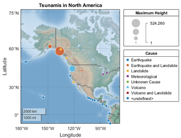
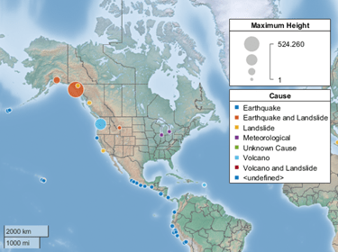

geobubble
Standalone geographic bubble chart
Syntax
Description
Table Data
geobubble(
creates a standalone geographic bubble chart from the specified latitude and longitude
coordinates. The tbl,latvar,lonvar)tbl argument indicates the table that contains the
coordinates. The latvar argument indicates the table variables that
contains latitudes. The lonvar argument indicates the table variables
that contains longitudes. By default, all the bubbles are the same size and color.
Vector Data
geobubble(
specifies the colors of the bubbles using the categorical values in
lat,lon,sizedata,colordata)colordata. The function chooses a color for each category in
colordata, plus one additional color for any elements of
colordata that are undefined. The function selects colors from an
ordered list of seven standard colors. If your data specifies more than seven categories,
then the function cyclically repeats the colors.
Additional Options
geobubble(___,
specifies Name=Value)GeographicBubbleChart properties using name-value arguments.
Specify the properties after all other input arguments. For example, the
SizeVariable and ColorVariable properties
enable you to specify table variables that determine the sizes and colors of the bubbles.
For a list of properties, see GeographicBubbleChart Properties.
geobubble( creates
the geographic bubble chart in the figure, panel, tab, or tiled chart layout specified by
parent,___)parent.
gb = geobubble(___)GeographicBubbleChart object. Use gb to modify
properties of the chart after creating it. For a list of properties, see GeographicBubbleChart Properties.
Examples
Read data about tsunamis into the workspace as a table. The table rows represent individual tsunami occurrences. The table variables include data about the tsunamis, such as the latitudes, longitudes, causes, and wave heights.
tsunamis = readtable("tsunamis.xlsx");Prepare to color the bubbles according to the causes of the tsunamis. The Cause variable attributes a cause to each tsunami, such as 'Earthquake', 'Volcano', or 'Earthquake and Landslide'. Convert the Cause variable from a cell array of character vectors to a categorical vector.
tsunamis.Cause = categorical(tsunamis.Cause);
Create a geographic bubble chart from the table. Specify the tsunami locations using the Latitude and Longitude table variables. Specify the sizes of the bubble using the wave heights stored in the MaxHeight table variable. Specify the colors of the bubbles using the categories stored in the Cause table variable. When you create a geographic bubble chart from table data and specify the SizeVariable and ColorVariable arguments, the size and color legends display the names of the associated table variables.
geobubble(tsunamis,"Latitude","Longitude", ... SizeVariable="MaxHeight",ColorVariable="Cause")

Read data about tsunamis into the workspace as a table. The table rows represent individual tsunami occurrences. The table variables include data about the tsunamis, such as the latitudes, longitudes, causes, and wave heights.
tsunamis = readtable("tsunamis.xlsx");Extract the latitudes, longitudes, and wave heights from the table.
lat = tsunamis.Latitude; lon = tsunamis.Longitude; sizedata = tsunamis.MaxHeight;
Create a geographic bubble chart from the latitudes, longitudes, and wave heights. Specify the bubble sizes using the wave heights. The geobubble function uses sizedata to control the relative distribution of the bubble sizes.
geobubble(lat,lon,sizedata)

Read data about tsunamis into the workspace as a table. The table rows represent individual tsunami occurrences. The table variables include data about the tsunamis, such as the latitudes, longitudes, causes, and wave heights.
tsunamis = readtable("tsunamis.xlsx");Extract the latitudes, longitudes, wave heights, and causes from the table.
lat = tsunamis.Latitude; lon = tsunamis.Longitude; sizedata = tsunamis.MaxHeight; colordata = tsunamis.Cause;
The colordata variable categorizes the tsunamis by seven criteria: Earthquake, Earthquake and Landslide, Volcano, Volcano and Landslide, Landslide, Meteorological, and Unknown Cause. Convert colordata to a categorical vector.
colordata = categorical(colordata);
Create a geographic bubble chart from the latitudes, longitudes, wave heights, and causes. Specify the bubble sizes using the wave heights. Specify the bubble colors using the causes.
geobubble(lat,lon,sizedata,colordata)

When you create geographic bubble charts from vector data, the legends do not have titles. Add legend titles by specifying properties of the geographic bubble chart.
Read data about tsunamis into the workspace as a table. The table rows represent individual tsunami occurrences. The table variables include data about the tsunamis, such as the latitudes, longitudes, causes, and wave heights.
tsunamis = readtable("tsunamis.xlsx");Extract the latitudes, longitudes, wave heights, and causes from the table.
lat = tsunamis.Latitude; lon = tsunamis.Longitude; sizedata = tsunamis.MaxHeight; colordata = tsunamis.Cause;
The colordata variable categorizes the tsunamis by seven criteria: Earthquake, Earthquake and Landslide, Volcano, Volcano and Landslide, Landslide, Meteorological, and Unknown Cause. Convert colordata to a categorical vector.
colordata = categorical(colordata);
Create a geographic bubble chart from the data. Return the GeographicBubbleChart object as gb.
gb = geobubble(lat,lon,sizedata,colordata);
Add a title and legend titles by setting the Title, SizeLegendTitle, and ColorLegendTitle properties.
gb.Title = "Tsunamis"; gb.SizeLegendTitle = "Max Height"; gb.ColorLegendTitle = "Cause";

Input Arguments
Name-Value Arguments
Specify optional pairs of arguments as
Name1=Value1,...,NameN=ValueN, where Name is
the argument name and Value is the corresponding value.
Name-value arguments must appear after other arguments, but the order of the
pairs does not matter.
Example: geobubble(tbl,latvar,lonvar,SizeVariable="MaxHeight",ColorVariable="Cause")
specifies the table variables that contain bubble size data and bubble color
data.
Before R2021a, use commas to separate each name and value, and enclose
Name in quotes.
Example: geobubble(tbl,latvar,lonvar,"SizeVariable","MaxHeight","ColorVariable","Cause")
specifies the table variables that contain bubble size data and bubble color
data.
Note
Use name-value arguments to specify values for the properties of the
GeographicBubbleChart objects created by this function. The properties
listed here are only a subset. For a complete list, see GeographicBubbleChart Properties.
Map on which to plot data, specified as one of the values listed in the table. Six of the basemaps are tiled data sets created using Natural Earth. Five of the basemaps are high-zoom-level maps hosted by Esri®.
|
|
Map designed to provide geographic context while highlighting user data on a light background. Hosted by Esri. |
|
Map designed to provide geographic context while highlighting user data on a dark background. Hosted by Esri. |
|
|
General-purpose road map that emphasizes accurate, legible styling of roads and transit networks. Hosted by Esri. |
|
Full global basemap composed of high-resolution satellite imagery. Hosted by Esri. |
|
|
General-purpose map with styling to depict topographic features. Hosted by Esri. |
|
Map that combines satellite-derived land cover data, shaded relief, and ocean-bottom relief. The light, natural palette is suitable for thematic and reference maps. Created using Natural Earth. |
|
|
Shaded relief map blended with a land cover palette. Humid lowlands are green and arid lowlands are brown. Created using Natural Earth. |
|
Terrain map in shades of gray. Shaded relief emphasizes both high mountains and micro-terrain found in lowlands. Created using Natural Earth. |
|
|
Two-tone, land-ocean map with light green land areas and light blue water areas. Created using Natural Earth. |
|
Two-tone, land-ocean map with gray land areas and white water areas. Created using Natural Earth. |
|
|
Two-tone, land-ocean map with light gray land areas and dark gray water areas. This basemap is installed with MATLAB®. Created using Natural Earth. |
Blank background that plots your data with a latitude-longitude grid, ticks, and labels. |


All basemaps except 'darkwater' require Internet access. The
'darkwater' basemap is included with MATLAB.
If you do not have consistent access to the Internet, you can download the basemaps created using Natural Earth onto your local system by using the Add-On Explorer. The five high-zoom-level maps are not available for download. For more about downloading basemaps and changing the default basemap on your local system, see Access Basemaps for Geographic Axes and Charts.
The basemaps hosted by Esri update periodically. As a result, you might see differences in your visualizations over time.
Alignment of boundaries and region labels are a presentation of the feature provided by the data vendors and do not imply endorsement by MathWorks®.
Data Types: char | string
Layout of the map, including the insets and decorations, specified as
'normal' or 'maximized'.
| Value | Description | Illustration |
|---|---|---|
'normal' | Map is inset from the edges of the chart, as defined by its
OuterPosition property. The axes labels, ticks,
and tick labels are visible. The title is visible, when specified.
Legends, when present, appear outside and to the right of the
map. |
 |
'maximized' | Map fills the entire space, as defined by the
OuterPosition property. The axes labels, ticks,
and tick labels are hidden. The title is hidden, even when specified.
The grid is hidden, even when the GridVisible
property has a value of 'on'. Legends, when present,
appear within the map, toward the upper-right corner. |
 |
Data Types: char | string
Table variable containing the bubble size data, specified using one of these indexing schemes.
| Indexing Scheme | Examples |
|---|---|
Variable name:
|
|
Variable index:
|
|
Variable type:
|
|
The variable you specify can contain any numeric type. When you set the SizeVariable property,
MATLAB updates the SizeData property.
Table variable containing the bubble color data, specified using one of these indexing schemes.
| Indexing Scheme | Examples |
|---|---|
Variable name:
|
|
Variable index:
|
|
Variable type:
|
|
The variable you specify must contain categorical values. When you set the ColorVariable property,
MATLAB updates the ColorData property.
Output Arguments
More About
Tips
If you create a geographic bubble chart from a table, then you can customize its data tips.
To add or remove a row from the data tip, right-click anywhere on the chart and point to Modify Data Tips. Then, select or deselect a variable.
To add or remove multiple rows, right-click on the chart, point to Modify Data Tips, and select More. Then, add variables by clicking >> or remove them by clicking <<.
To programmatically bring focus to a geographic bubble chart, use the
axesfunction, for exampleaxes(gb).When you plot on geographic axes, the
geobubblefunction assumes that coordinates are referenced to the WGS84 coordinate reference system. If you plot using coordinates that are referenced to a different coordinate reference system, then the coordinates might appear misaligned.
Alternative Functionality
Geographic bubble charts do not support customizations such as changing the line width of bubbles, changing the transparency of bubbles, or adding text and line annotations. To create a similar chart that supports more customizations, create a bubble chart in a geographic axes by using the
geoaxesandbubblechartfunctions. For an example that shows how to create such a chart, see Combine Bubble Chart with Other Graphics in Geographic Axes.To create a bubble chart in a map axes object (Mapping Toolbox™), use the
bubblechartfunction.
Version History
Introduced in R2017b